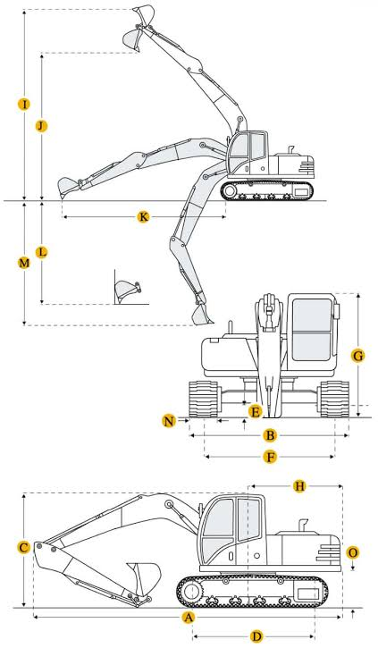

Гусеничный экскаватор Komatsu PC200-8
← Вернуться в каталог спецтехники
Внешний вид и рабочая зона


Описание модели
Komatsu PC200-8 — это надежный гусеничный экскаватор среднего класса, оснащенный экономичным дизельным двигателем стандарта Tier 3 с системой непосредственного впрыска топлива. Усиленная ходовая часть и гидравлическая система с закрытым центром обеспечивают высокую производительность при работе в тяжелых климатических и грунтовых условиях.
Техника поставляется полностью заправленной ГСМ. По желанию заказчика возможна комплектация гидромолотом или траншейным ковшом.
Технические характеристики
| Параметр | Значение |
|---|---|
| Эксплуатационная масса | 20 000 кг |
| Модель двигателя | Komatsu SAA6D107E-1 (155 л.с.) |
| Объем стандартного ковша | 1.0 м³ |
| Максимальная глубина копания | 6 620 мм |
| Максимальный радиус копания | 9 875 мм |
| Ширина гусеничной ленты | 600 мм |
| Стоимость 1 смены (8 часов) | 18 000 руб. (без НДС) |